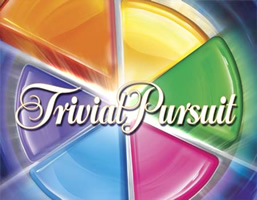
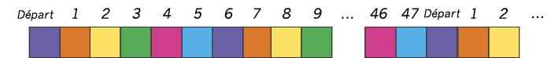

QUESTION : 1/7

Enoncé
Dans le jeu Trivial Pursuit, le parcours est un cercle composé de 48 cases dont la couleur peut-être orange, jaune, vert, rose, bleu ou violet. Les couleurs des cases du parcours s'enchainent dans l'ordre suivant : orange puis jaune puis vert puis rose puis bleu puis violet. Durant le jeu, chaque joueur lance un dé et avance du nombre de cases indiqué par le dé. Le but de ce challenge est de déterminer la couleur de la case d'arrivée après plusieurs lancés de dé. Les parcours étant un cercle, l'ensemble des lancés de dé peut faire effectuer plus d'un tour complet du parcours au joueur.

On suppose qu'au départ le joueur est sur une case dont la couleur est violet.
Le résultat affiché par votre code doit être la couleur de la case d'arrivée.
Format des données
Entrée
Une série de lignes contenant chacune un chiffre entre 1 et 6.
Sortie
Une couleur parmi orange, jaune, vert, rose, bleu, violet.